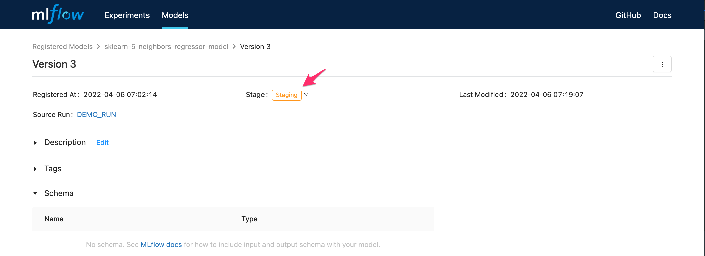

API Workflow
Ultima modificación: Mayo 14, 2022
Diretorio para almacenar el proyecto
[1]:
#
# Borra el directorio de trabajo
#
!rm -rf mlruns
!rm mlruns.db
Codebase
[2]:
def load_data():
import pandas as pd
url = "https://raw.githubusercontent.com/jdvelasq/datalabs/master/datasets/concrete.csv"
df = pd.read_csv(url)
df = df.astype({'age': 'float'})
y = df["strength"]
x = df.copy()
x.pop("strength")
return x, y
def make_train_test_split(x, y):
from sklearn.model_selection import train_test_split
(x_train, x_test, y_train, y_test) = train_test_split(
x,
y,
test_size=0.25,
random_state=123456,
)
return x_train, x_test, y_train, y_test
def eval_metrics(y_true, y_pred):
from sklearn.metrics import mean_absolute_error, mean_squared_error, r2_score
mse = mean_squared_error(y_true, y_pred)
mae = mean_absolute_error(y_true, y_pred)
r2 = r2_score(y_true, y_pred)
return mse, mae, r2
def report(estimator, mse, mae, r2):
print(estimator, ":", sep="")
print(f" MSE: {mse}")
print(f" MAE: {mae}")
print(f" R2: {r2}")
# def log_metrics(mse, mae, r2):
#
# import mlflow
#
# mlflow.log_metric("mse", mse)
# mlflow.log_metric("mae", mae)
# mlflow.log_metric("r2", r2)
def make_pipeline(estimator):
from sklearn.pipeline import Pipeline
from sklearn.preprocessing import MinMaxScaler
pipeline = Pipeline(
steps=[
("minMaxScaler", MinMaxScaler()),
("estimator", estimator),
],
)
return pipeline
def set_tracking_uri():
import mlflow
mlflow.set_tracking_uri('sqlite:///mlruns.db')
def display_config():
import mlflow
print("Current model registry uri: {}".format(mlflow.get_registry_uri()))
print(" Current tracking uri: {}".format(mlflow.get_tracking_uri()))
Adición del modelo con mlflow.<model_flavor>.log_model()
[3]:
def make_k_neighbors_regressor(n_neighbors):
from sklearn.neighbors import KNeighborsRegressor
import mlflow
x, y = load_data()
x_train, x_test, y_train, y_test = make_train_test_split(x, y)
estimator = make_pipeline(
estimator=KNeighborsRegressor(n_neighbors=n_neighbors),
)
set_tracking_uri()
with mlflow.start_run(run_name="DEMO_RUN") as run:
print(f"MLflow run ID: {run.info.run_id}")
estimator.fit(x_train, y_train)
mse, mae, r2 = eval_metrics(
y_true=y_test,
y_pred=estimator.predict(x_test),
)
report(estimator, mse, mae, r2)
#
# Parametros y metricas
#
mlflow.log_param('n_neighbors', n_neighbors)
mlflow.log_metric("mse", mse)
mlflow.log_metric("mae", mae)
mlflow.log_metric("r2", r2)
#
# Registro del modelo como version 1
#
mlflow.sklearn.log_model(
sk_model=estimator,
artifact_path="model",
registered_model_name=f"sklearn-{n_neighbors}-neighbors-regressor-model"
)
make_k_neighbors_regressor(n_neighbors=5)
2022/06/03 22:49:22 INFO mlflow.store.db.utils: Creating initial MLflow database tables...
2022/06/03 22:49:22 INFO mlflow.store.db.utils: Updating database tables
INFO [alembic.runtime.migration] Context impl SQLiteImpl.
INFO [alembic.runtime.migration] Will assume non-transactional DDL.
INFO [alembic.runtime.migration] Running upgrade -> 451aebb31d03, add metric step
INFO [alembic.runtime.migration] Running upgrade 451aebb31d03 -> 90e64c465722, migrate user column to tags
INFO [alembic.runtime.migration] Running upgrade 90e64c465722 -> 181f10493468, allow nulls for metric values
INFO [alembic.runtime.migration] Running upgrade 181f10493468 -> df50e92ffc5e, Add Experiment Tags Table
INFO [alembic.runtime.migration] Running upgrade df50e92ffc5e -> 7ac759974ad8, Update run tags with larger limit
INFO [alembic.runtime.migration] Running upgrade 7ac759974ad8 -> 89d4b8295536, create latest metrics table
INFO [89d4b8295536_create_latest_metrics_table_py] Migration complete!
INFO [alembic.runtime.migration] Running upgrade 89d4b8295536 -> 2b4d017a5e9b, add model registry tables to db
INFO [2b4d017a5e9b_add_model_registry_tables_to_db_py] Adding registered_models and model_versions tables to database.
INFO [2b4d017a5e9b_add_model_registry_tables_to_db_py] Migration complete!
INFO [alembic.runtime.migration] Running upgrade 2b4d017a5e9b -> cfd24bdc0731, Update run status constraint with killed
INFO [alembic.runtime.migration] Running upgrade cfd24bdc0731 -> 0a8213491aaa, drop_duplicate_killed_constraint
INFO [alembic.runtime.migration] Running upgrade 0a8213491aaa -> 728d730b5ebd, add registered model tags table
INFO [alembic.runtime.migration] Running upgrade 728d730b5ebd -> 27a6a02d2cf1, add model version tags table
INFO [alembic.runtime.migration] Running upgrade 27a6a02d2cf1 -> 84291f40a231, add run_link to model_version
INFO [alembic.runtime.migration] Running upgrade 84291f40a231 -> a8c4a736bde6, allow nulls for run_id
INFO [alembic.runtime.migration] Running upgrade a8c4a736bde6 -> 39d1c3be5f05, add_is_nan_constraint_for_metrics_tables_if_necessary
INFO [alembic.runtime.migration] Running upgrade 39d1c3be5f05 -> c48cb773bb87, reset_default_value_for_is_nan_in_metrics_table_for_mysql
INFO [alembic.runtime.migration] Running upgrade c48cb773bb87 -> bd07f7e963c5, create index on run_uuid
INFO [alembic.runtime.migration] Context impl SQLiteImpl.
INFO [alembic.runtime.migration] Will assume non-transactional DDL.
MLflow run ID: 1e8edaa87d7b495f92bd5ad32045a7ea
Pipeline(steps=[('minMaxScaler', MinMaxScaler()),
('estimator', KNeighborsRegressor())]):
MSE: 85.34441046511628
MAE: 7.084488372093023
R2: 0.7094208188067321
/Volumes/GitHub/courses-source/notebooks/mlflow/.venv/lib/python3.8/site-packages/setuptools/distutils_patch.py:25: UserWarning: Distutils was imported before Setuptools. This usage is discouraged and may exhibit undesirable behaviors or errors. Please use Setuptools' objects directly or at least import Setuptools first.
warnings.warn(
Successfully registered model 'sklearn-5-neighbors-regressor-model'.
2022/06/03 22:49:25 INFO mlflow.tracking._model_registry.client: Waiting up to 300 seconds for model version to finish creation. Model name: sklearn-5-neighbors-regressor-model, version 1
Created version '1' of model 'sklearn-5-neighbors-regressor-model'.
Adición del modelo con mlflow.register.model()
[4]:
def make_k_neighbors_regressor(n_neighbors):
from sklearn.neighbors import KNeighborsRegressor
import mlflow
x, y = load_data()
x_train, x_test, y_train, y_test = make_train_test_split(x, y)
estimator = make_pipeline(
estimator=KNeighborsRegressor(n_neighbors=n_neighbors),
)
set_tracking_uri()
with mlflow.start_run(run_name="DEMO_RUN") as run:
print(f"MLflow run ID: {run.info.run_id}")
estimator.fit(x_train, y_train)
mse, mae, r2 = eval_metrics(
y_true=y_test,
y_pred=estimator.predict(x_test),
)
report(estimator, mse, mae, r2)
#
# Parametros y metricas
#
mlflow.log_param('n_neighbors', n_neighbors)
mlflow.log_metric("mse", mse)
mlflow.log_metric("mae", mae)
mlflow.log_metric("r2", r2)
#
# log del modelo
#
mlflow.sklearn.log_model(estimator, "model")
#
# Despues de realizar muchas corridas, se registra el medelo usando el
# run_id
#
mlflow.register_model(
f"runs:/{run.info.run_id}",
f"sklearn-{n_neighbors}-neighbors-regressor-model"
)
make_k_neighbors_regressor(n_neighbors=5)
MLflow run ID: afd912e3c5cb46c093e05bfd3d79173c
Pipeline(steps=[('minMaxScaler', MinMaxScaler()),
('estimator', KNeighborsRegressor())]):
MSE: 85.34441046511628
MAE: 7.084488372093023
R2: 0.7094208188067321
Registered model 'sklearn-5-neighbors-regressor-model' already exists. Creating a new version of this model...
2022/06/03 22:49:27 INFO mlflow.tracking._model_registry.client: Waiting up to 300 seconds for model version to finish creation. Model name: sklearn-5-neighbors-regressor-model, version 2
Created version '2' of model 'sklearn-5-neighbors-regressor-model'.
Adición del modelo con create_registered_model()
[5]:
def make_k_neighbors_regressor(n_neighbors):
from sklearn.neighbors import KNeighborsRegressor
import mlflow
from mlflow.tracking import MlflowClient
x, y = load_data()
x_train, x_test, y_train, y_test = make_train_test_split(x, y)
estimator = make_pipeline(
estimator=KNeighborsRegressor(n_neighbors=n_neighbors),
)
set_tracking_uri()
with mlflow.start_run(run_name="DEMO_RUN") as run:
print(f"MLflow run ID: {run.info.run_id}")
estimator.fit(x_train, y_train)
mse, mae, r2 = eval_metrics(
y_true=y_test,
y_pred=estimator.predict(x_test),
)
report(estimator, mse, mae, r2)
#
# Parametros y metricas
#
mlflow.log_param("n_neighbors", n_neighbors)
mlflow.log_metric("mse", mse)
mlflow.log_metric("mae", mae)
mlflow.log_metric("r2", r2)
#
# log del modelo
#
mlflow.sklearn.log_model(estimator, "model")
#
# Despues de realizar muchas corridas, se registra el medelo usando el
# run_id
#
client = MlflowClient()
client.create_model_version(
name=f"sklearn-{n_neighbors}-neighbors-regressor-model",
source=f"mlruns/0/{run.info.run_id}/artifacts/model",
run_id=run.info.run_id,
)
make_k_neighbors_regressor(n_neighbors=5)
MLflow run ID: 169b0fe18316405992abf4e5b08db6ef
Pipeline(steps=[('minMaxScaler', MinMaxScaler()),
('estimator', KNeighborsRegressor())]):
MSE: 85.34441046511628
MAE: 7.084488372093023
R2: 0.7094208188067321
2022/06/03 22:49:29 INFO mlflow.tracking._model_registry.client: Waiting up to 300 seconds for model version to finish creation. Model name: sklearn-5-neighbors-regressor-model, version 3
Carga de una versión específica del modelo
[6]:
#
# Carga de una versión específica del modelo
#
def predict():
import mlflow
x, y = load_data()
x_train, x_test, y_train, y_test = make_train_test_split(x, y)
model_name = "sklearn-5-neighbors-regressor-model"
model_version = 1
model = mlflow.pyfunc.load_model(
model_uri=f"models:/{model_name}/{model_version}"
)
return model.predict(x_test[0:10])
predict()
[6]:
array([38.838, 15.852, 11.67 , 26.634, 32.11 , 27.81 , 24.602, 18.056,
18.93 , 42.354])
Cambio manual del estado de un modelo
None (cuando se crea)
Staging
Production
Archived
Se entra a mlflow ui y se cambia el estado del modelo.
Para visualizar la interfase use:
mlflow ui --backend-store-uri sqlite:///mlruns.db
Nota: En docker usar:
mlflow ui --host 0.0.0.0 --backend-store-uri sqlite:///mlruns.db
con:
Paso 1

Paso 2
Paso 3
Paso 4
Paso 5
Carga de un modelo por estado
[7]:
def predict():
import mlflow
x, y = load_data()
x_train, x_test, y_train, y_test = make_train_test_split(x, y)
model_name = "sklearn-5-neighbors-regressor-model"
stage = 'Staging'
model = mlflow.pyfunc.load_model(
model_uri=f"models:/{model_name}/{stage}"
)
return model.predict(x_test[0:10])
predict()
---------------------------------------------------------------------------
MlflowException Traceback (most recent call last)
Input In [7], in <cell line: 18>()
11 model = mlflow.pyfunc.load_model(
12 model_uri=f"models:/{model_name}/{stage}"
13 )
15 return model.predict(x_test[0:10])
---> 18 predict()
Input In [7], in predict()
8 model_name = "sklearn-5-neighbors-regressor-model"
9 stage = 'Staging'
---> 11 model = mlflow.pyfunc.load_model(
12 model_uri=f"models:/{model_name}/{stage}"
13 )
15 return model.predict(x_test[0:10])
File /Volumes/GitHub/courses-source/notebooks/mlflow/.venv/lib/python3.8/site-packages/mlflow/pyfunc/__init__.py:716, in load_model(model_uri, suppress_warnings, dst_path)
690 def load_model(
691 model_uri: str, suppress_warnings: bool = False, dst_path: str = None
692 ) -> PyFuncModel:
693 """
694 Load a model stored in Python function format.
695
(...)
714 path will be created.
715 """
--> 716 local_path = _download_artifact_from_uri(artifact_uri=model_uri, output_path=dst_path)
718 if not suppress_warnings:
719 _warn_dependency_requirement_mismatches(local_path)
File /Volumes/GitHub/courses-source/notebooks/mlflow/.venv/lib/python3.8/site-packages/mlflow/tracking/artifact_utils.py:94, in _download_artifact_from_uri(artifact_uri, output_path)
91 parsed_uri = parsed_uri._replace(path=posixpath.dirname(parsed_uri.path))
92 root_uri = prefix + urllib.parse.urlunparse(parsed_uri)
---> 94 return get_artifact_repository(artifact_uri=root_uri).download_artifacts(
95 artifact_path=artifact_path, dst_path=output_path
96 )
File /Volumes/GitHub/courses-source/notebooks/mlflow/.venv/lib/python3.8/site-packages/mlflow/store/artifact/artifact_repository_registry.py:107, in get_artifact_repository(artifact_uri)
97 def get_artifact_repository(artifact_uri):
98 """Get an artifact repository from the registry based on the scheme of artifact_uri
99
100 :param artifact_uri: The artifact store URI. This URI is used to select which artifact
(...)
105 requirements.
106 """
--> 107 return _artifact_repository_registry.get_artifact_repository(artifact_uri)
File /Volumes/GitHub/courses-source/notebooks/mlflow/.venv/lib/python3.8/site-packages/mlflow/store/artifact/artifact_repository_registry.py:73, in ArtifactRepositoryRegistry.get_artifact_repository(self, artifact_uri)
66 if repository is None:
67 raise MlflowException(
68 "Could not find a registered artifact repository for: {}. "
69 "Currently registered schemes are: {}".format(
70 artifact_uri, list(self._registry.keys())
71 )
72 )
---> 73 return repository(artifact_uri)
File /Volumes/GitHub/courses-source/notebooks/mlflow/.venv/lib/python3.8/site-packages/mlflow/store/artifact/models_artifact_repo.py:35, in ModelsArtifactRepository.__init__(self, artifact_uri)
33 self.repo = DatabricksModelsArtifactRepository(artifact_uri)
34 else:
---> 35 uri = ModelsArtifactRepository.get_underlying_uri(artifact_uri)
36 self.repo = get_artifact_repository(uri)
File /Volumes/GitHub/courses-source/notebooks/mlflow/.venv/lib/python3.8/site-packages/mlflow/store/artifact/models_artifact_repo.py:68, in ModelsArtifactRepository.get_underlying_uri(uri)
64 databricks_profile_uri = (
65 get_databricks_profile_uri_from_artifact_uri(uri) or mlflow.get_registry_uri()
66 )
67 client = MlflowClient(registry_uri=databricks_profile_uri)
---> 68 (name, version) = get_model_name_and_version(client, uri)
69 download_uri = client.get_model_version_download_uri(name, version)
70 return add_databricks_profile_info_to_artifact_uri(download_uri, databricks_profile_uri)
File /Volumes/GitHub/courses-source/notebooks/mlflow/.venv/lib/python3.8/site-packages/mlflow/store/artifact/utils/models.py:74, in get_model_name_and_version(client, models_uri)
72 if model_version is not None:
73 return model_name, str(model_version)
---> 74 return model_name, str(_get_latest_model_version(client, model_name, model_stage))
File /Volumes/GitHub/courses-source/notebooks/mlflow/.venv/lib/python3.8/site-packages/mlflow/store/artifact/utils/models.py:31, in _get_latest_model_version(client, name, stage)
29 if len(latest) == 0:
30 stage_str = "" if stage is None else " and stage '{stage}'".format(stage=stage)
---> 31 raise MlflowException(
32 "No versions of model with name '{name}'{stage_str} found".format(
33 name=name, stage_str=stage_str
34 )
35 )
36 return max(map(lambda x: int(x.version), latest))
MlflowException: No versions of model with name 'sklearn-5-neighbors-regressor-model' and stage 'Staging' found
Puesta en productivo como un API
#!/usr/bin/env sh
export MLFLOW_TRACKING_URI=http://localhost:5000
mlflow models serve -m "models:/sklearn-5-neighbors-regressor-model/Production"
Cambio del estado de un modelo por código
[ ]:
def change_name():
import mlflow
client = mlflow.tracking.MlflowClient()
client.transition_model_version_stage(
name="sklearn-5-neighbors-regressor-model",
version=1,
# Staging|Archived|Production|None
stage="Production",
)
change_name()
Listado y búsqueda de modelos
[ ]:
def list_models():
from pprint import pprint
import mlflow
client = mlflow.tracking.MlflowClient()
for rm in client.list_registered_models():
pprint(dict(rm), indent=4)
list_models()
[ ]:
def search_models():
from pprint import pprint
import mlflow
client = mlflow.tracking.MlflowClient()
for mv in client.search_model_versions("name='sklearn-5-neighbors-regressor-model'"):
pprint(dict(mv), indent=4)
print()
search_models()